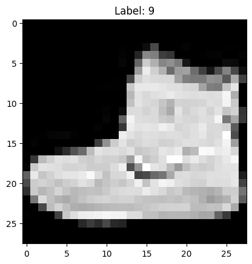

import torch
import torch.nn as nn
from torch.utils.data import TensorDataset, DataLoader, Dataset
from torchvision import datasets
from torchvision.transforms import ToTensor
import matplotlib.pyplot as plt# Get cpu, gpu or mps device for training.
device = (
"cuda"
if torch.cuda.is_available()
else "mps"
if torch.backends.mps.is_available()
else "cpu"
)
print(f"Using {device} device")Using mps device# Download training data from open datasets.
training_data = datasets.FashionMNIST(
root="data",
train=True,
download=True,
transform=ToTensor(),
)
# Download test data from open datasets.
test_data = datasets.FashionMNIST(
root="data",
train=False,
download=True,
transform=ToTensor(),
)image, label = training_data[0] # 0th imageprint(f"Length of the training dataset {len(training_data)}")
image.shapeLength of the training dataset 60000torch.Size([1, 28, 28])image_np = image.squeeze(dim=0).numpy()
plt.imshow(image_np, cmap="gray")
plt.title(f"Label: {label}")
plt.show()
batch_size = 64
# Create data loaders.
train_dataloader = DataLoader(training_data, batch_size=batch_size)
test_dataloader = DataLoader(test_data, batch_size=batch_size)
for X, y in test_dataloader:
print(f"Shape of X [N, C, H, W]: {X.shape}")
print(f"Shape of y: {y.shape} {y.dtype}")
breakShape of X [N, C, H, W]: torch.Size([64, 1, 28, 28])
Shape of y: torch.Size([64]) torch.int64# Define model
class NeuralNetwork(nn.Module):
def __init__(self):
super().__init__()
self.flatten = nn.Flatten(start_dim =1)
self.linear_relu_stack = nn.Sequential(
nn.Linear(28*28, 512),
nn.ReLU(),
nn.Dropout(0.25),
nn.Linear(512, 512),
nn.ReLU(),
nn.Linear(512, 10)
)
def forward(self, x):
#print(f"Size of input Tensor {x.shape}")
x = self.flatten(x)
#print(f"After Flatten: {x.shape}")
logits = self.linear_relu_stack(x)
return logits
model = NeuralNetwork().to(device)
print(model)NeuralNetwork(
(flatten): Flatten(start_dim=1, end_dim=-1)
(linear_relu_stack): Sequential(
(0): Linear(in_features=784, out_features=512, bias=True)
(1): ReLU()
(2): Dropout(p=0.25, inplace=False)
(3): Linear(in_features=512, out_features=512, bias=True)
(4): ReLU()
(5): Linear(in_features=512, out_features=10, bias=True)
)
)loss_fn = nn.CrossEntropyLoss()
optimizer = torch.optim.SGD(model.parameters(), lr=1e-3)def train(dataloader, model, loss_fn, optimizer):
size = len(dataloader.dataset)
model.train()
for batch, (X, y) in enumerate(dataloader):
X, y = X.to(device), y.to(device)
# Compute prediction error
pred = model(X)
loss = loss_fn(pred, y)
# Backpropagation
loss.backward()
optimizer.step()
optimizer.zero_grad()
if batch % 100 == 0:
loss, current = loss.item(), (batch + 1) * len(X)
print(f"loss: {loss:>7f} [{current:>5d}/{size:>5d}]")def test(dataloader, model, loss_fn):
size = len(dataloader.dataset)
num_batches = len(dataloader)
model.eval()
test_loss, correct = 0, 0
with torch.no_grad():
for X, y in dataloader:
X, y = X.to(device), y.to(device)
pred = model(X)
test_loss += loss_fn(pred, y).item()
correct += (pred.argmax(1) == y).type(torch.float).sum().item()
test_loss /= num_batches
correct /= size
print(f"Test Error: \n Accuracy: {(100*correct):>0.1f}%, Avg loss: {test_loss:>8f} \n")epochs = 50
for t in range(epochs):
print(f"Epoch {t+1}\n-------------------------------")
train(train_dataloader, model, loss_fn, optimizer)
test(test_dataloader, model, loss_fn)
print("Done!")Epoch 1
-------------------------------
loss: 2.298296 [ 64/60000]
loss: 2.282213 [ 6464/60000]
loss: 2.266148 [12864/60000]
loss: 2.263077 [19264/60000]
loss: 2.268831 [25664/60000]
loss: 2.225084 [32064/60000]
loss: 2.245842 [38464/60000]
loss: 2.199167 [44864/60000]
loss: 2.205921 [51264/60000]
loss: 2.186027 [57664/60000]
Test Error:
Accuracy: 36.4%, Avg loss: 2.163777
Epoch 2
-------------------------------
loss: 2.181344 [ 64/60000]
loss: 2.166702 [ 6464/60000]
loss: 2.114061 [12864/60000]
loss: 2.139325 [19264/60000]
loss: 2.099915 [25664/60000]
loss: 2.035254 [32064/60000]
loss: 2.087618 [38464/60000]
loss: 2.000578 [44864/60000]
loss: 2.002508 [51264/60000]
loss: 1.950973 [57664/60000]
Test Error:
Accuracy: 56.1%, Avg loss: 1.915715
Epoch 3
-------------------------------
loss: 1.960988 [ 64/60000]
loss: 1.924359 [ 6464/60000]
loss: 1.854146 [12864/60000]
loss: 1.860061 [19264/60000]
loss: 1.766131 [25664/60000]
loss: 1.724658 [32064/60000]
loss: 1.747804 [38464/60000]
loss: 1.640125 [44864/60000]
loss: 1.671738 [51264/60000]
loss: 1.570330 [57664/60000]
Test Error:
Accuracy: 61.6%, Avg loss: 1.545847
Epoch 4
-------------------------------
loss: 1.631749 [ 64/60000]
loss: 1.592189 [ 6464/60000]
loss: 1.474233 [12864/60000]
loss: 1.525604 [19264/60000]
loss: 1.430795 [25664/60000]
loss: 1.385079 [32064/60000]
loss: 1.415063 [38464/60000]
loss: 1.330629 [44864/60000]
loss: 1.366863 [51264/60000]
loss: 1.258173 [57664/60000]
Test Error:
Accuracy: 63.3%, Avg loss: 1.265006
Epoch 5
-------------------------------
loss: 1.375588 [ 64/60000]
loss: 1.334530 [ 6464/60000]
loss: 1.181517 [12864/60000]
loss: 1.300183 [19264/60000]
loss: 1.192963 [25664/60000]
loss: 1.189192 [32064/60000]
loss: 1.233815 [38464/60000]
loss: 1.134293 [44864/60000]
loss: 1.197205 [51264/60000]
loss: 1.101940 [57664/60000]
Test Error:
Accuracy: 64.7%, Avg loss: 1.092474
Epoch 6
-------------------------------
loss: 1.196014 [ 64/60000]
loss: 1.213762 [ 6464/60000]
loss: 1.018933 [12864/60000]
loss: 1.146462 [19264/60000]
loss: 1.021540 [25664/60000]
loss: 1.032592 [32064/60000]
loss: 1.116143 [38464/60000]
loss: 1.023080 [44864/60000]
loss: 1.052058 [51264/60000]
loss: 1.003589 [57664/60000]
Test Error:
Accuracy: 65.6%, Avg loss: 0.983323
Epoch 7
-------------------------------
loss: 1.081786 [ 64/60000]
loss: 1.118868 [ 6464/60000]
loss: 0.879458 [12864/60000]
loss: 1.042356 [19264/60000]
loss: 0.893699 [25664/60000]
loss: 0.976261 [32064/60000]
loss: 0.957645 [38464/60000]
loss: 0.950382 [44864/60000]
loss: 0.975640 [51264/60000]
loss: 0.922089 [57664/60000]
Test Error:
Accuracy: 66.8%, Avg loss: 0.910578
Epoch 8
-------------------------------
loss: 0.970003 [ 64/60000]
loss: 1.023136 [ 6464/60000]
loss: 0.825816 [12864/60000]
loss: 1.031218 [19264/60000]
loss: 0.866112 [25664/60000]
loss: 0.855157 [32064/60000]
loss: 0.955455 [38464/60000]
loss: 0.937556 [44864/60000]
loss: 0.965490 [51264/60000]
loss: 0.880244 [57664/60000]
Test Error:
Accuracy: 68.0%, Avg loss: 0.859537
Epoch 9
-------------------------------
loss: 0.901527 [ 64/60000]
loss: 0.990419 [ 6464/60000]
loss: 0.742971 [12864/60000]
loss: 0.980194 [19264/60000]
loss: 0.843835 [25664/60000]
loss: 0.854469 [32064/60000]
loss: 0.946432 [38464/60000]
loss: 0.901446 [44864/60000]
loss: 0.880539 [51264/60000]
loss: 0.808153 [57664/60000]
Test Error:
Accuracy: 69.0%, Avg loss: 0.821849
Epoch 10
-------------------------------
loss: 0.853238 [ 64/60000]
loss: 0.932680 [ 6464/60000]
loss: 0.702776 [12864/60000]
loss: 0.933771 [19264/60000]
loss: 0.807236 [25664/60000]
loss: 0.803624 [32064/60000]
loss: 0.906728 [38464/60000]
loss: 0.864268 [44864/60000]
loss: 0.856516 [51264/60000]
loss: 0.805792 [57664/60000]
Test Error:
Accuracy: 70.0%, Avg loss: 0.792234
Epoch 11
-------------------------------
loss: 0.813779 [ 64/60000]
loss: 0.863903 [ 6464/60000]
loss: 0.668801 [12864/60000]
loss: 0.878438 [19264/60000]
loss: 0.772139 [25664/60000]
loss: 0.773446 [32064/60000]
loss: 0.852162 [38464/60000]
loss: 0.880208 [44864/60000]
loss: 0.793738 [51264/60000]
loss: 0.768993 [57664/60000]
Test Error:
Accuracy: 71.0%, Avg loss: 0.767975
Epoch 12
-------------------------------
loss: 0.770365 [ 64/60000]
loss: 0.865316 [ 6464/60000]
loss: 0.666259 [12864/60000]
loss: 0.812501 [19264/60000]
loss: 0.768294 [25664/60000]
loss: 0.754508 [32064/60000]
loss: 0.829981 [38464/60000]
loss: 0.821262 [44864/60000]
loss: 0.800309 [51264/60000]
loss: 0.740091 [57664/60000]
Test Error:
Accuracy: 72.3%, Avg loss: 0.747186
Epoch 13
-------------------------------
loss: 0.789585 [ 64/60000]
loss: 0.819980 [ 6464/60000]
loss: 0.597671 [12864/60000]
loss: 0.799215 [19264/60000]
loss: 0.749160 [25664/60000]
loss: 0.727265 [32064/60000]
loss: 0.790014 [38464/60000]
loss: 0.760097 [44864/60000]
loss: 0.831657 [51264/60000]
loss: 0.712645 [57664/60000]
Test Error:
Accuracy: 73.3%, Avg loss: 0.728866
Epoch 14
-------------------------------
loss: 0.717295 [ 64/60000]
loss: 0.801778 [ 6464/60000]
loss: 0.598143 [12864/60000]
loss: 0.837110 [19264/60000]
loss: 0.731961 [25664/60000]
loss: 0.732344 [32064/60000]
loss: 0.779369 [38464/60000]
loss: 0.739902 [44864/60000]
loss: 0.755351 [51264/60000]
loss: 0.701263 [57664/60000]
Test Error:
Accuracy: 74.2%, Avg loss: 0.712342
Epoch 15
-------------------------------
loss: 0.678608 [ 64/60000]
loss: 0.835714 [ 6464/60000]
loss: 0.556177 [12864/60000]
loss: 0.771743 [19264/60000]
loss: 0.705848 [25664/60000]
loss: 0.681211 [32064/60000]
loss: 0.783069 [38464/60000]
loss: 0.795003 [44864/60000]
loss: 0.758296 [51264/60000]
loss: 0.740307 [57664/60000]
Test Error:
Accuracy: 74.9%, Avg loss: 0.697342
Epoch 16
-------------------------------
loss: 0.683619 [ 64/60000]
loss: 0.755973 [ 6464/60000]
loss: 0.554527 [12864/60000]
loss: 0.758081 [19264/60000]
loss: 0.698933 [25664/60000]
loss: 0.674997 [32064/60000]
loss: 0.804926 [38464/60000]
loss: 0.721176 [44864/60000]
loss: 0.765750 [51264/60000]
loss: 0.683950 [57664/60000]
Test Error:
Accuracy: 75.3%, Avg loss: 0.683126
Epoch 17
-------------------------------
loss: 0.674869 [ 64/60000]
loss: 0.768249 [ 6464/60000]
loss: 0.535483 [12864/60000]
loss: 0.752313 [19264/60000]
loss: 0.707287 [25664/60000]
loss: 0.674747 [32064/60000]
loss: 0.789734 [38464/60000]
loss: 0.733495 [44864/60000]
loss: 0.747153 [51264/60000]
loss: 0.686336 [57664/60000]
Test Error:
Accuracy: 76.1%, Avg loss: 0.670068
Epoch 18
-------------------------------
loss: 0.651914 [ 64/60000]
loss: 0.784361 [ 6464/60000]
loss: 0.469537 [12864/60000]
loss: 0.735958 [19264/60000]
loss: 0.659753 [25664/60000]
loss: 0.670088 [32064/60000]
loss: 0.747228 [38464/60000]
loss: 0.693825 [44864/60000]
loss: 0.666039 [51264/60000]
loss: 0.660554 [57664/60000]
Test Error:
Accuracy: 76.9%, Avg loss: 0.657986
Epoch 19
-------------------------------
loss: 0.617415 [ 64/60000]
loss: 0.763765 [ 6464/60000]
loss: 0.504906 [12864/60000]
loss: 0.758569 [19264/60000]
loss: 0.660907 [25664/60000]
loss: 0.624445 [32064/60000]
loss: 0.737043 [38464/60000]
loss: 0.800838 [44864/60000]
loss: 0.744829 [51264/60000]
loss: 0.709330 [57664/60000]
Test Error:
Accuracy: 77.4%, Avg loss: 0.646483
Epoch 20
-------------------------------
loss: 0.636804 [ 64/60000]
loss: 0.709468 [ 6464/60000]
loss: 0.527087 [12864/60000]
loss: 0.723498 [19264/60000]
loss: 0.711156 [25664/60000]
loss: 0.615480 [32064/60000]
loss: 0.670980 [38464/60000]
loss: 0.664937 [44864/60000]
loss: 0.710959 [51264/60000]
loss: 0.607577 [57664/60000]
Test Error:
Accuracy: 77.9%, Avg loss: 0.635748
Epoch 21
-------------------------------
loss: 0.614816 [ 64/60000]
loss: 0.707628 [ 6464/60000]
loss: 0.489302 [12864/60000]
loss: 0.701375 [19264/60000]
loss: 0.609815 [25664/60000]
loss: 0.596263 [32064/60000]
loss: 0.744105 [38464/60000]
loss: 0.721395 [44864/60000]
loss: 0.671495 [51264/60000]
loss: 0.600730 [57664/60000]
Test Error:
Accuracy: 78.3%, Avg loss: 0.625912
Epoch 22
-------------------------------
loss: 0.574486 [ 64/60000]
loss: 0.721622 [ 6464/60000]
loss: 0.488595 [12864/60000]
loss: 0.728549 [19264/60000]
loss: 0.642455 [25664/60000]
loss: 0.610294 [32064/60000]
loss: 0.735651 [38464/60000]
loss: 0.729338 [44864/60000]
loss: 0.670417 [51264/60000]
loss: 0.646930 [57664/60000]
Test Error:
Accuracy: 78.8%, Avg loss: 0.616754
Epoch 23
-------------------------------
loss: 0.581455 [ 64/60000]
loss: 0.651348 [ 6464/60000]
loss: 0.491175 [12864/60000]
loss: 0.707654 [19264/60000]
loss: 0.650996 [25664/60000]
loss: 0.627171 [32064/60000]
loss: 0.666098 [38464/60000]
loss: 0.679779 [44864/60000]
loss: 0.696203 [51264/60000]
loss: 0.619682 [57664/60000]
Test Error:
Accuracy: 79.0%, Avg loss: 0.607846
Epoch 24
-------------------------------
loss: 0.572871 [ 64/60000]
loss: 0.639697 [ 6464/60000]
loss: 0.463474 [12864/60000]
loss: 0.712242 [19264/60000]
loss: 0.645218 [25664/60000]
loss: 0.591073 [32064/60000]
loss: 0.673050 [38464/60000]
loss: 0.685910 [44864/60000]
loss: 0.680410 [51264/60000]
loss: 0.665205 [57664/60000]
Test Error:
Accuracy: 79.4%, Avg loss: 0.599832
Epoch 25
-------------------------------
loss: 0.560449 [ 64/60000]
loss: 0.658762 [ 6464/60000]
loss: 0.439639 [12864/60000]
loss: 0.711735 [19264/60000]
loss: 0.702291 [25664/60000]
loss: 0.588156 [32064/60000]
loss: 0.640410 [38464/60000]
loss: 0.720983 [44864/60000]
loss: 0.651035 [51264/60000]
loss: 0.613282 [57664/60000]
Test Error:
Accuracy: 79.5%, Avg loss: 0.592366
Epoch 26
-------------------------------
loss: 0.535610 [ 64/60000]
loss: 0.623020 [ 6464/60000]
loss: 0.439348 [12864/60000]
loss: 0.661418 [19264/60000]
loss: 0.613323 [25664/60000]
loss: 0.578198 [32064/60000]
loss: 0.646807 [38464/60000]
loss: 0.688478 [44864/60000]
loss: 0.710046 [51264/60000]
loss: 0.609333 [57664/60000]
Test Error:
Accuracy: 79.8%, Avg loss: 0.585287
Epoch 27
-------------------------------
loss: 0.484252 [ 64/60000]
loss: 0.664570 [ 6464/60000]
loss: 0.439155 [12864/60000]
loss: 0.660320 [19264/60000]
loss: 0.630165 [25664/60000]
loss: 0.605465 [32064/60000]
loss: 0.604039 [38464/60000]
loss: 0.681780 [44864/60000]
loss: 0.690952 [51264/60000]
loss: 0.579494 [57664/60000]
Test Error:
Accuracy: 80.0%, Avg loss: 0.578767
Epoch 28
-------------------------------
loss: 0.524099 [ 64/60000]
loss: 0.643074 [ 6464/60000]
loss: 0.425485 [12864/60000]
loss: 0.682533 [19264/60000]
loss: 0.595918 [25664/60000]
loss: 0.586165 [32064/60000]
loss: 0.649428 [38464/60000]
loss: 0.636160 [44864/60000]
loss: 0.645136 [51264/60000]
loss: 0.569549 [57664/60000]
Test Error:
Accuracy: 80.2%, Avg loss: 0.572591
Epoch 29
-------------------------------
loss: 0.507513 [ 64/60000]
loss: 0.614488 [ 6464/60000]
loss: 0.460531 [12864/60000]
loss: 0.696532 [19264/60000]
loss: 0.583868 [25664/60000]
loss: 0.559413 [32064/60000]
loss: 0.619873 [38464/60000]
loss: 0.710216 [44864/60000]
loss: 0.671713 [51264/60000]
loss: 0.600863 [57664/60000]
Test Error:
Accuracy: 80.4%, Avg loss: 0.566845
Epoch 30
-------------------------------
loss: 0.486274 [ 64/60000]
loss: 0.628098 [ 6464/60000]
loss: 0.430219 [12864/60000]
loss: 0.708331 [19264/60000]
loss: 0.609635 [25664/60000]
loss: 0.546494 [32064/60000]
loss: 0.601163 [38464/60000]
loss: 0.704691 [44864/60000]
loss: 0.645793 [51264/60000]
loss: 0.565446 [57664/60000]
Test Error:
Accuracy: 80.5%, Avg loss: 0.561256
Epoch 31
-------------------------------
loss: 0.493926 [ 64/60000]
loss: 0.613942 [ 6464/60000]
loss: 0.376692 [12864/60000]
loss: 0.695025 [19264/60000]
loss: 0.607498 [25664/60000]
loss: 0.540468 [32064/60000]
loss: 0.607455 [38464/60000]
loss: 0.712841 [44864/60000]
loss: 0.670727 [51264/60000]
loss: 0.545248 [57664/60000]
Test Error:
Accuracy: 80.7%, Avg loss: 0.556191
Epoch 32
-------------------------------
loss: 0.481013 [ 64/60000]
loss: 0.562349 [ 6464/60000]
loss: 0.433377 [12864/60000]
loss: 0.666805 [19264/60000]
loss: 0.593045 [25664/60000]
loss: 0.587128 [32064/60000]
loss: 0.606249 [38464/60000]
loss: 0.644734 [44864/60000]
loss: 0.675255 [51264/60000]
loss: 0.568087 [57664/60000]
Test Error:
Accuracy: 80.9%, Avg loss: 0.551073
Epoch 33
-------------------------------
loss: 0.500560 [ 64/60000]
loss: 0.618631 [ 6464/60000]
loss: 0.415513 [12864/60000]
loss: 0.620497 [19264/60000]
loss: 0.613646 [25664/60000]
loss: 0.572566 [32064/60000]
loss: 0.607542 [38464/60000]
loss: 0.693569 [44864/60000]
loss: 0.592101 [51264/60000]
loss: 0.557891 [57664/60000]
Test Error:
Accuracy: 81.0%, Avg loss: 0.546736
Epoch 34
-------------------------------
loss: 0.477452 [ 64/60000]
loss: 0.583678 [ 6464/60000]
loss: 0.416824 [12864/60000]
loss: 0.682345 [19264/60000]
loss: 0.506534 [25664/60000]
loss: 0.542897 [32064/60000]
loss: 0.558408 [38464/60000]
loss: 0.638639 [44864/60000]
loss: 0.592590 [51264/60000]
loss: 0.564327 [57664/60000]
Test Error:
Accuracy: 81.0%, Avg loss: 0.542367
Epoch 35
-------------------------------
loss: 0.461166 [ 64/60000]
loss: 0.557703 [ 6464/60000]
loss: 0.457119 [12864/60000]
loss: 0.638805 [19264/60000]
loss: 0.563971 [25664/60000]
loss: 0.537696 [32064/60000]
loss: 0.573073 [38464/60000]
loss: 0.675386 [44864/60000]
loss: 0.656254 [51264/60000]
loss: 0.567930 [57664/60000]
Test Error:
Accuracy: 81.2%, Avg loss: 0.538181
Epoch 36
-------------------------------
loss: 0.454521 [ 64/60000]
loss: 0.594309 [ 6464/60000]
loss: 0.378403 [12864/60000]
loss: 0.674881 [19264/60000]
loss: 0.578825 [25664/60000]
loss: 0.537637 [32064/60000]
loss: 0.556339 [38464/60000]
loss: 0.647215 [44864/60000]
loss: 0.659704 [51264/60000]
loss: 0.509028 [57664/60000]
Test Error:
Accuracy: 81.3%, Avg loss: 0.534549
Epoch 37
-------------------------------
loss: 0.458713 [ 64/60000]
loss: 0.576849 [ 6464/60000]
loss: 0.346030 [12864/60000]
loss: 0.628363 [19264/60000]
loss: 0.533999 [25664/60000]
loss: 0.538977 [32064/60000]
loss: 0.510503 [38464/60000]
loss: 0.689993 [44864/60000]
loss: 0.639134 [51264/60000]
loss: 0.532964 [57664/60000]
Test Error:
Accuracy: 81.5%, Avg loss: 0.530647
Epoch 38
-------------------------------
loss: 0.392519 [ 64/60000]
loss: 0.585487 [ 6464/60000]
loss: 0.396170 [12864/60000]
loss: 0.606007 [19264/60000]
loss: 0.606205 [25664/60000]
loss: 0.563885 [32064/60000]
loss: 0.546315 [38464/60000]
loss: 0.675911 [44864/60000]
loss: 0.695619 [51264/60000]
loss: 0.553648 [57664/60000]
Test Error:
Accuracy: 81.6%, Avg loss: 0.527046
Epoch 39
-------------------------------
loss: 0.448235 [ 64/60000]
loss: 0.581293 [ 6464/60000]
loss: 0.327347 [12864/60000]
loss: 0.620210 [19264/60000]
loss: 0.585992 [25664/60000]
loss: 0.547809 [32064/60000]
loss: 0.594739 [38464/60000]
loss: 0.649272 [44864/60000]
loss: 0.643038 [51264/60000]
loss: 0.509701 [57664/60000]
Test Error:
Accuracy: 81.7%, Avg loss: 0.523682
Epoch 40
-------------------------------
loss: 0.430015 [ 64/60000]
loss: 0.544287 [ 6464/60000]
loss: 0.380895 [12864/60000]
loss: 0.608836 [19264/60000]
loss: 0.575603 [25664/60000]
loss: 0.529118 [32064/60000]
loss: 0.580789 [38464/60000]
loss: 0.652189 [44864/60000]
loss: 0.641808 [51264/60000]
loss: 0.553182 [57664/60000]
Test Error:
Accuracy: 81.8%, Avg loss: 0.520629
Epoch 41
-------------------------------
loss: 0.415198 [ 64/60000]
loss: 0.559401 [ 6464/60000]
loss: 0.364302 [12864/60000]
loss: 0.608204 [19264/60000]
loss: 0.534221 [25664/60000]
loss: 0.574648 [32064/60000]
loss: 0.527740 [38464/60000]
loss: 0.650530 [44864/60000]
loss: 0.574861 [51264/60000]
loss: 0.498488 [57664/60000]
Test Error:
Accuracy: 81.9%, Avg loss: 0.517426
Epoch 42
-------------------------------
loss: 0.439248 [ 64/60000]
loss: 0.587995 [ 6464/60000]
loss: 0.368372 [12864/60000]
loss: 0.585487 [19264/60000]
loss: 0.500006 [25664/60000]
loss: 0.511805 [32064/60000]
loss: 0.573569 [38464/60000]
loss: 0.679368 [44864/60000]
loss: 0.646687 [51264/60000]
loss: 0.528532 [57664/60000]
Test Error:
Accuracy: 82.0%, Avg loss: 0.514529
Epoch 43
-------------------------------
loss: 0.433984 [ 64/60000]
loss: 0.524339 [ 6464/60000]
loss: 0.395251 [12864/60000]
loss: 0.581516 [19264/60000]
loss: 0.520236 [25664/60000]
loss: 0.531539 [32064/60000]
loss: 0.515636 [38464/60000]
loss: 0.664488 [44864/60000]
loss: 0.640781 [51264/60000]
loss: 0.504813 [57664/60000]
Test Error:
Accuracy: 82.1%, Avg loss: 0.511770
Epoch 44
-------------------------------
loss: 0.423223 [ 64/60000]
loss: 0.539973 [ 6464/60000]
loss: 0.335490 [12864/60000]
loss: 0.616651 [19264/60000]
loss: 0.544237 [25664/60000]
loss: 0.532550 [32064/60000]
loss: 0.560005 [38464/60000]
loss: 0.665030 [44864/60000]
loss: 0.548322 [51264/60000]
loss: 0.487250 [57664/60000]
Test Error:
Accuracy: 82.2%, Avg loss: 0.508736
Epoch 45
-------------------------------
loss: 0.425752 [ 64/60000]
loss: 0.527092 [ 6464/60000]
loss: 0.328840 [12864/60000]
loss: 0.614787 [19264/60000]
loss: 0.533057 [25664/60000]
loss: 0.504855 [32064/60000]
loss: 0.560020 [38464/60000]
loss: 0.626464 [44864/60000]
loss: 0.662893 [51264/60000]
loss: 0.500375 [57664/60000]
Test Error:
Accuracy: 82.3%, Avg loss: 0.506320
Epoch 46
-------------------------------
loss: 0.417341 [ 64/60000]
loss: 0.531774 [ 6464/60000]
loss: 0.354004 [12864/60000]
loss: 0.627570 [19264/60000]
loss: 0.557077 [25664/60000]
loss: 0.527289 [32064/60000]
loss: 0.531685 [38464/60000]
loss: 0.655453 [44864/60000]
loss: 0.600211 [51264/60000]
loss: 0.490536 [57664/60000]
Test Error:
Accuracy: 82.3%, Avg loss: 0.503571
Epoch 47
-------------------------------
loss: 0.390862 [ 64/60000]
loss: 0.565676 [ 6464/60000]
loss: 0.355830 [12864/60000]
loss: 0.600548 [19264/60000]
loss: 0.481056 [25664/60000]
loss: 0.503059 [32064/60000]
loss: 0.508495 [38464/60000]
loss: 0.664547 [44864/60000]
loss: 0.640757 [51264/60000]
loss: 0.477380 [57664/60000]
Test Error:
Accuracy: 82.4%, Avg loss: 0.501201
Epoch 48
-------------------------------
loss: 0.410720 [ 64/60000]
loss: 0.500934 [ 6464/60000]
loss: 0.357153 [12864/60000]
loss: 0.595672 [19264/60000]
loss: 0.511233 [25664/60000]
loss: 0.520689 [32064/60000]
loss: 0.541548 [38464/60000]
loss: 0.654920 [44864/60000]
loss: 0.656826 [51264/60000]
loss: 0.487816 [57664/60000]
Test Error:
Accuracy: 82.3%, Avg loss: 0.498908
Epoch 49
-------------------------------
loss: 0.366393 [ 64/60000]
loss: 0.547639 [ 6464/60000]
loss: 0.349391 [12864/60000]
loss: 0.600082 [19264/60000]
loss: 0.493288 [25664/60000]
loss: 0.509587 [32064/60000]
loss: 0.521377 [38464/60000]
loss: 0.635077 [44864/60000]
loss: 0.623595 [51264/60000]
loss: 0.504242 [57664/60000]
Test Error:
Accuracy: 82.5%, Avg loss: 0.496542
Epoch 50
-------------------------------
loss: 0.395036 [ 64/60000]
loss: 0.539723 [ 6464/60000]
loss: 0.349148 [12864/60000]
loss: 0.540632 [19264/60000]
loss: 0.504727 [25664/60000]
loss: 0.520554 [32064/60000]
loss: 0.491151 [38464/60000]
loss: 0.607649 [44864/60000]
loss: 0.639295 [51264/60000]
loss: 0.441168 [57664/60000]
Test Error:
Accuracy: 82.6%, Avg loss: 0.494327
Done!torch.save(model.state_dict(), "model_01.pth")
print("Saved PyTorch Model State to model_01.pth")Saved PyTorch Model State to model_01.pthmodel = NeuralNetwork().to(device)
model.load_state_dict(torch.load("model_01.pth", weights_only=True))<All keys matched successfully>classes = [
"T-shirt/top",
"Trouser",
"Pullover",
"Dress",
"Coat",
"Sandal",
"Shirt",
"Sneaker",
"Bag",
"Ankle boot",
]
model.eval()
x, y = test_data[0][0], test_data[0][1]
with torch.no_grad():
x = x.to(device)
pred = model(x)
predicted, actual = classes[pred[0].argmax(0)], classes[y]
print(f'Predicted: "{predicted}", Actual: "{actual}"')Predicted: "Ankle boot", Actual: "Ankle boot"my_req_dataset = next(iter(test_dataloader))model.eval()
out = model(my_req_dataset[0].to(device))out.shapetorch.Size([64, 10])#torch.rand((64,1,28,28)).flatten(start_dim=1).shape